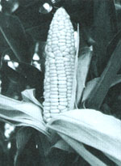
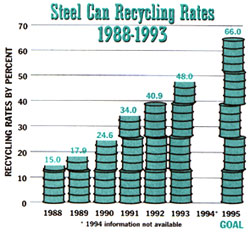

A Yale study suggests that a hotter planet might actually improve food production.
Earlier scientific predictions that global warming would devastate U.S. agriculture in the next century by leaving corn withering on the stalk and desiccating vast wheat fields across the Midwest are unduly pessimistic, according to a new analysis by Yale economists. In fact, they suggest that U.S. agriculture would be minimally damaged and could even be slightly more profitable if global warming occurs.
The new study, funded by the U.S. Department of Agriculture and the National Science Foundation is scheduled to be published later this year in the journal American Economic Review. It is based on climate and economic data from 3,000 counties and is the first to use existing data to project the complex economic changes that would occur as farmers adapt to rising temperatures by shifting to more profitable crops or land uses.
The study also is the first to base projections on farmland value, which reflects the most profitable use of the land under competitive markets, according to Robert Mendelsohn, professor of forest policy in the Yale School of Forestry and Environmental Studies. He coauthored the analysis with Yale economist William D. Nordhaus and Daigree Shaw of the Institute of Economics in Taipei, China.
Previous economic forecasts, which placed U.S. agricultural losses on average about three times higher than the Yale study, focused too heavily on declining grain production and omitted adaptations farmers might make, Professor Mendelsohn said. For example, a 1989 Environmental Protection Agency study estimated crop losses by the second half of the 21 st century at $6 billion to $34 billion per year, while Yale researchers predict a range of effects on farmland value from a loss of about $6 billion per year to a gain of as much as $2 billion.
"While earlier studies focusing on crop yields provide a useful baseline, they have an inherent bias that causes damages to be overestimated," according to professor Mendelsohn. "The bias is sometimes called `the dumb farmer scenario' because it ignores possible adjustments such as the introduction of completely new crops, technological change or changes in land use from farming to livestock, grasslands, or forestry."
The forecast for American agriculture would be even more optimistic if the fact that plants grow faster as carbon dioxide levels increase were taken into account, Professor Mendelsohn said. In fact, global warming would probably increase worldwide food production, he added, by extending the growing season and making farming profitable in areas now too cold for farming. But the economic impact could be very harsh in isolated areas, especially in developing countries dependent on subsistence farming, he said. The Yale study used a midrange estimate of greenhouse effects, projecting that a doubling of today's carbon dioxide level will cause the average global temperature to rise about five degrees Fahrenheit and increase annual precipitation by about 8 percent by the second half of the next century.
Their research has enabled Professor Mendelsohn and others to develop a new model for forecasting agricultural profitability. Called a Ricardian approach, it differs from previous models by placing less emphasis on wheat and corn, which require cooler growing conditions but, in 1982, accounted for only about $22.5 billion-less than 19 percent of the total market. (The Yale researchers used data from the 1982 Census of Agriculture and based their forecasts on the dollar value in 1982. )
One version of the Ricardian model used by the Yale researchers focuses on cropland acreage and inherently places more emphasis on farms growing grains, thus yielding predictions of slight agricultural losses. The second version, which yields predictions of agricultural gains as high as $2 billion a year, emphasizes farm revenues and places a relatively higher value on irrigated farmland in the West and South. These regions have a Mediterranean and subtropical climate-a climate that will become relatively more abundant with rising global temperatures-and their crops yield more revenue per acre than grains. "Irrigated warm-weather crops such as fruits, vegetables, rice, hay, grapes, and cotton may be a silver lining behind the climate-change cloud," Professor Mendelsohn said.
Most of us beat the high cost of living by saving a nickel here, a penny there. But Bill Kaysing of Soquel, California, cofounder of the Holy Terra Church in nearby Aptos, which he started to-help the sick and the homeless, has found a unique approach to keeping living costs to a minimum. It's called microhousing and the houses he's created resemble a child's playhouse or a backyard toolshed.
Back in 1940, after seeing his childhood friend's father move out of his house and into the backyard tool shed as a result of a divorce, it hit Kaysing that the toolshed didn't make a bad home. Even though this was an ordinary toolshed, it had a toilet, kitchen, and contained everything to make it a pleasant place to live. He was overwhelmed by the man's ingenuity and has continued to apply this innovative thinking to his own life.
Kaysing was not alone. The microhouse was officially named the Granny house back in the 1970s by California State Senator Henry Mello for its use as a second housing unit for older people. The relaxed building code's only requirements were that it be less than 640 square feet and be occupied by at least one person older than 60. Kaysing, however, sees the microhouse as suitable for anyone looking for an alternative or addition to their current home, an ideal place for teenagers who need a little space from mom and dad, or homesteaders who just need a quick roof.
According to Kaysing, a microhouse can be built with 16 pieces of 4' x 8' plywood. This includes the floor, roof, and sides.
Anyone who is interested in getting hold of blueprints for a microhouse can write to Bill Kaysing at P O. Box 832, Soquel, California 95073.
|
 In a new, warmer climate, our vast corn fields may have to give way to rice or grapes. |
 GRAPH DATA COURTESY OF THE STEEL CAN RECYCLING INSTITUTE |
|